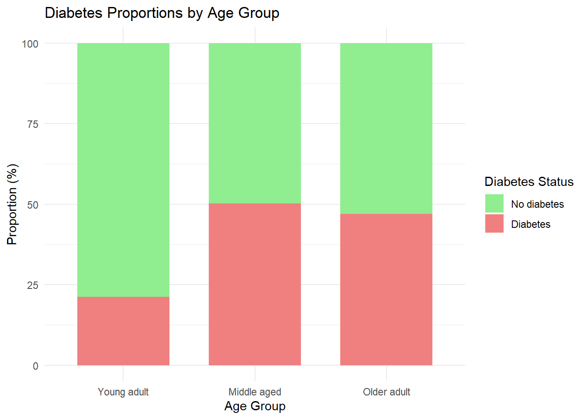

Logistic regression is a statistical method used to model and analyze datasets where the outcome variable is binary (e.g. “yes/no”, or “male/female”) and predictor variables are those believed to either influence, predict, or explain the outcome.
The best way to learn logistic regression is to look at an example (and try to replicate the analysis yourself). Use R to analyze a dataset called PimaIndiansDiabetes (accessed by installing mlbench).
The dataset has:
A binary outcome variable:
diabetes (positive or negative)
Predictor variables:
pregnant, number of times pregnant
glucose, blood glucose levels
pressure, diastolic blood pressure
triceps, triceps skin fold thickness
insulin, blood insulin levels
mass, body mass index (BMI)
pedigree, diabetes pedigree function
age, age in years
Note
Objective: To determine which predictor variables are associated with meaningful changes in the probability of being diagnosed with diabetes and to quantify the extent of their influences.
Understand how predictors influence the probability of diabetes can inform risk stratification, policy, or clinical interventions.
Let’s start with a single numeric predictor. In this case “glucose” and take look at the relationship between changing levels of glucose and the likelihood of being diagnosed with diabetes. Figure 1 shows the diagnostic status for each value in the dataset of glucose. It is clear that for lower levels of glucose, fewer people are diagnosed with diabetes and for higher levels of glucose, more people are diagnosed with diabetes.
Logistic regression uses that data to create a model than can be used to predict the probability of being diagnosed with diabetes at any level of glucose. Figure 2 shows how that probability changes over the values of glucose levels.
model <-glm(diabetes ~ glucose, data = PimaIndiansDiabetes, family ="binomial")# Generate data for the curveglucose_range <-data.frame(glucose =seq(min(PimaIndiansDiabetes$glucose),max(PimaIndiansDiabetes$glucose),length.out =500))glucose_range$prob <-predict(model, newdata = glucose_range, type ="response")# Plot the predicted probabilityplot_ly(data = glucose_range,x =~glucose,y =~prob,type ='scatter',mode ='lines',name ="Probability Curve") %>%layout(title ="Probability of Diabetes by Glucose Level",xaxis =list(title ="Glucose Level"),yaxis =list(title ="Probability of Diabetes") )
Figure 2: Predicted Probability of Diabetes by Glucose Levels
Creating a simple model
Here is the code to create and summarize a logistic regression model with this data (followed by results).
Call:
glm(formula = diabetes ~ glucose, family = binomial, data = PimaIndiansDiabetes)
Coefficients:
Estimate Std. Error z value Pr(>|z|)
(Intercept) -5.350080 0.420827 -12.71 <2e-16 ***
glucose 0.037873 0.003252 11.65 <2e-16 ***
---
Signif. codes: 0 '***' 0.001 '**' 0.01 '*' 0.05 '.' 0.1 ' ' 1
(Dispersion parameter for binomial family taken to be 1)
Null deviance: 993.48 on 767 degrees of freedom
Residual deviance: 808.72 on 766 degrees of freedom
AIC: 812.72
Number of Fisher Scoring iterations: 4
Explanatory Notes
glm() is used to fit a generalized linear model
The formula diabetes ~ glucose specifies that we are modelling diabetes as the outcome, predicted by glucose
The family = binomial argument indicates that we are using logistic regression (appropriate for binary outcomes
summary(model) provides detailed results of the model
Intercept tells us what the model looks like when glucose is zero (where the model intercepts the y-axis). This is meaningless in this example because people can’t live with zero glucose. So we can ignore that number.
We have coefficients for glucose, and our predictor variable. This will tell us what happens when the value of glucose changes. Specifically how it affects a person being diagnosed with diabetes. The change can be positive, negative, or zero. A positive number means that as glucose levels go up, the chances of being diagnosed with diabetes goes up too. If it were zero, there would be no change. If it were negative, it would mean that as glucose goes up, the chances of being diagnosed with diabetes would go down.
We use the term “chances” and not “probability” because the actual number is what is referred to as “long-odds” or the logarithm of the odds ratio.
A Single Categorical Predictor
Now let’s consider the same question using a categorical variable as predictor. The dataset doesn’t have a categorical variable using the age variable - dividing observations into “Young adult”, “Middle aged”, “Older adult”. We’re doing this to illustrate how to interpret the logistic regression results. In reality, it would be best practice to leave the Age variable as numeric and include it in the model.
Here is the code to create a categorical variable from a numeric variable:
Code
# Prepare the dataage_data <- PimaIndiansDiabetes %>%mutate(age_group =case_when( age <30~"Young adult", age <=50~"Middle aged",TRUE~"Older adult" )) %>%mutate(age_group =factor(age_group, levels =c("Young adult", "Middle aged", "Older adult"))) %>%count(age_group, diabetes) %>%group_by(age_group) %>%mutate(proportion = n /sum(n) *100)# Plot the chartggplot(age_data, aes(x = age_group, y = proportion, fill = diabetes)) +geom_col(position ="stack", width =0.7) +scale_fill_manual(values =c("neg"="lightgreen", "pos"="lightcoral"),labels =c("neg"="No diabetes", "pos"="Diabetes") ) +labs(x ="Age Group",y ="Proportion (%)",fill ="Diabetes Status",title ="Diabetes Proportions by Age Group" ) +theme_minimal()

Figure 3: Diabetes Proportion by Age Group
Figure 3 shows the proportion of observations that have a diagnosis of diabetes changes across these three categories.
Now let’s create a logistic regression model using age group (a categorical variable) as the predictor
Call:
glm(formula = diabetes ~ age_group, family = binomial, data = age_data2)
Coefficients:
Estimate Std. Error z value Pr(>|z|)
(Intercept) -1.3122 0.1229 -10.675 < 2e-16 ***
age_groupMiddle aged 1.3191 0.1699 7.765 8.16e-15 ***
age_groupOlder adult 1.1886 0.2543 4.673 2.96e-06 ***
---
Signif. codes: 0 '***' 0.001 '**' 0.01 '*' 0.05 '.' 0.1 ' ' 1
(Dispersion parameter for binomial family taken to be 1)
Null deviance: 993.48 on 767 degrees of freedom
Residual deviance: 924.66 on 765 degrees of freedom
AIC: 930.66
Number of Fisher Scoring iterations: 4
Under the heading “Coefficients” you’ll notice there is no row for “Young adult”. This is because it is our reference category. This is how R handles categorical variables in regression models. When you include a factor like age_group, R uses what’s called dummy coding (or treatment coding). It picks one of the factor levels to be the reference category, and all the other levels are compared to it. “Young adult” is the baseline or reference group. The regression intercept represents the log-odds of diabetes for this group, and the coefficients for “Middle aged” and “Older adult” tell you how much more (or less) likely those groups are to have diabetes compared to “Young adult.”
Adding Variables
By considering multiple predictors simultaneously, logistic regression allows us to exploit how each variable contributes to the likelihood of the outcome (in this case, diabetes) while accounting for the influence of others.
In the case of risk of diabetes, there may be multiple risk factors that we want to consider. Let’s start by adding variables to our model and see what happens. We’ll start by adding age to the model (the original age, numeric variable, not the categorical variable we created.
One of the key strengths of logistic regression is the ability to include multiple predictor variables in the model. For example, beyond plasma glucose concentration, we can include variables such as age, weight, pregnancy history, and blood pressure for example.
Call:
glm(formula = diabetes ~ glucose + age, family = binomial, data = PimaIndiansDiabetes)
Coefficients:
Estimate Std. Error z value Pr(>|z|)
(Intercept) -5.912449 0.462620 -12.78 < 2e-16 ***
glucose 0.035644 0.003290 10.83 < 2e-16 ***
age 0.024778 0.007374 3.36 0.000778 ***
---
Signif. codes: 0 '***' 0.001 '**' 0.01 '*' 0.05 '.' 0.1 ' ' 1
(Dispersion parameter for binomial family taken to be 1)
Null deviance: 993.48 on 767 degrees of freedom
Residual deviance: 797.36 on 765 degrees of freedom
AIC: 803.36
Number of Fisher Scoring iterations: 4
Glucose:
Looking at the results, we can see that glucose remains a positive and statistically significant predictor of diabetes. The coefficient is slightly lower than in the model without age. This reflects the adjusted effect of glucose on the likelihood of being diagnosed with diabetes, accounting for the effect of age. In other words, some of the previously observed effect of glucose on diabetes risk can now be attributed to the different ages of the subjects rather than solely on their glucose levels.
Age:
Age also has a positive effect on the likelihood of being diagnosed with diabetes, and the small p-value confirms this effect is statistically significant. Because glucose is included in the model, the age effect is adjusted for glucose.
Explanatory notes on other results:
Akaike Information Criteria (AIC):
A metric for comparing models, balancing goodness of fit with model complexity
Lower AIC values suggest better trade-off between fit and complexity. Adding variables that improve the model without overfitting typical results in a lower AIC.
The AIC (803.36) is also lower than the glucose-only model (814.59) indicating that adding age improves the model’s overall fit.
Residual Deviance:
Measures how well the model fits the data. It is a measure of the discrepancies between observed outcomes and the model’s predictions.
Lower values indicate better fit. A drop in residual deviance when adding a variable suggests the new variable improves the model.
The residual deviance (797.36) is lower than that of the glucose-only model (808.59), showing improved fit with the addition of age.
Null Deviance:
Represents the deviance of a model with no predictors (only an intercept)
This is the baseline for comparison, showing how much better the model predictors perform compared to a model with no predictors.
When to use: Null deviance is useful in understanding the baseline dataset. For instance, if the null deviance is very high and the residual deviance of your model remains close to it, it indicates that your predictors are not significantly improving the model’s fit, and the model may not be capturing meaningful relationships in the data.
Number of Fisher Score Iterations:
Refers to the number of iterations the algorithm needed to converge on a solution when estimating model parameters.
Fewer iterations indicates faster convergence, but this metric is not typically used to evaluate model quality.
When to use: If a model takes an unusually high number of iterations to converge, it might signal an issue with the data or the model, such as multicollinearity or poorly scaled variables. Hypothetical example: If a logistic regression model takes 50 iterations (instead of 4-5) to converge, you might check for these issues or simplify the model.
We now have the tools we need to build a model. We can add numeric and categorical variables and look at the p-value of the coefficients to determine if its predictive value is statistically significant and then look at the residual deviance and AIC, which if lower, indicate the model is improved by adding that variable.
Before building the model however, there are a few concepts and ideas that we need to explore that will help us understand how variables interact with each other.
Confounding Variables
Confounding occurs when a third variable influences both the predictor and the outcome, distorting the relationship between the predictor and the outcome.
Confounding creates a spurious association that might disappear or change when the confounding variable is controlled for by including it in the model.
In this mode, for example, we should ask if being older (age) has an effect on the likelihood of diabetes (the outcome variable) AND glucose levels. If that were true, then some of the effect of glucose on diabetes could be accounted for simply by virtue of the fact that older people have higher glucose levels AND older people are more likely to have diabetes.
Figure 4 shows the relationship between age and glucose levels in the dataset:
Code
PimaIndiansDiabetes %>%ggplot(aes(age, glucose)) +geom_smooth(method = lm, se = F)